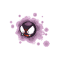
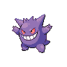
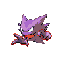

01 · Inicial
Gastly
La niebla gaseosa que inicia el viaje.
Pokémon · Tipo Fantasma
Tres formas, una misma presencia espectral. Descubre el recorrido de Gastly hasta convertirse en el imponente Gengar.

La transformación

01 · Inicial
La niebla gaseosa que inicia el viaje.

02 · Intermedia
Una presencia traviesa entre dos mundos.
03 · Final
La sombra definitiva que acecha detrás.
Ficha de la línea
Archivo espectral
Contenido de ejemplo sobre Gastly, la primera etapa de la línea evolutiva.
Contenido de ejemplo sobre Haunter, la segunda etapa de la línea evolutiva.
Contenido de ejemplo sobre Gengar, la etapa final de la línea evolutiva.